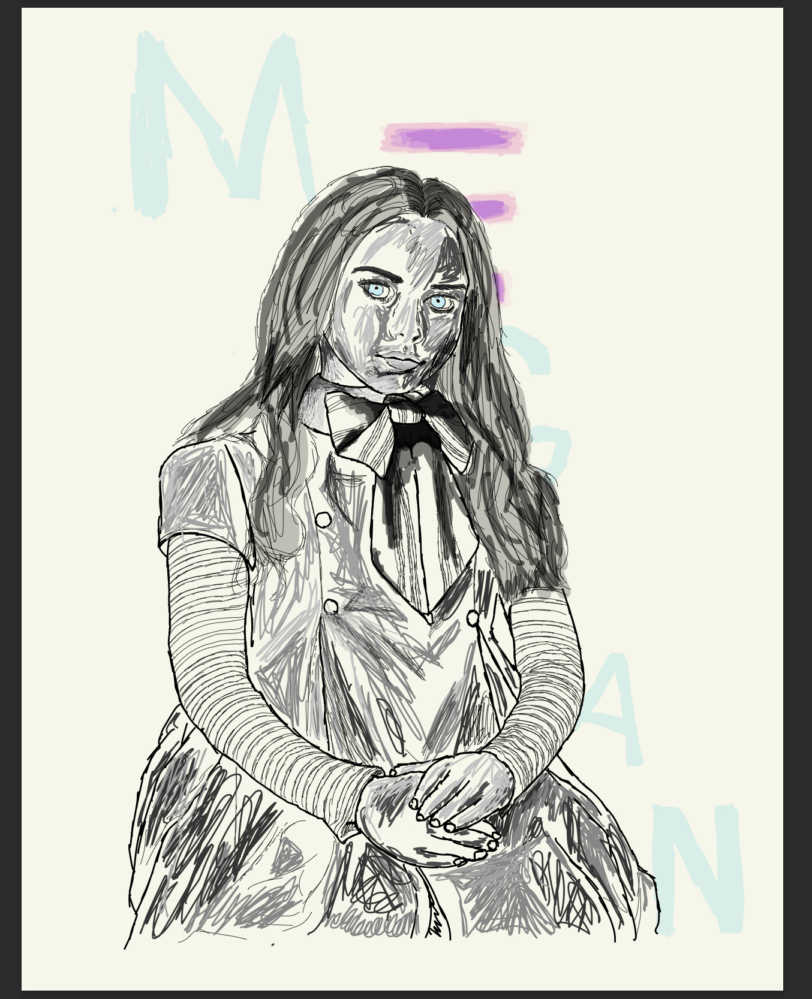
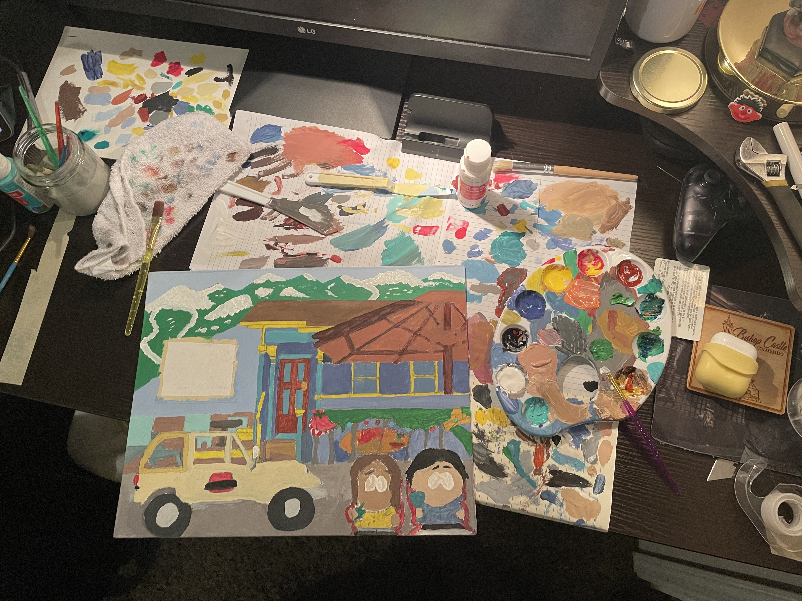
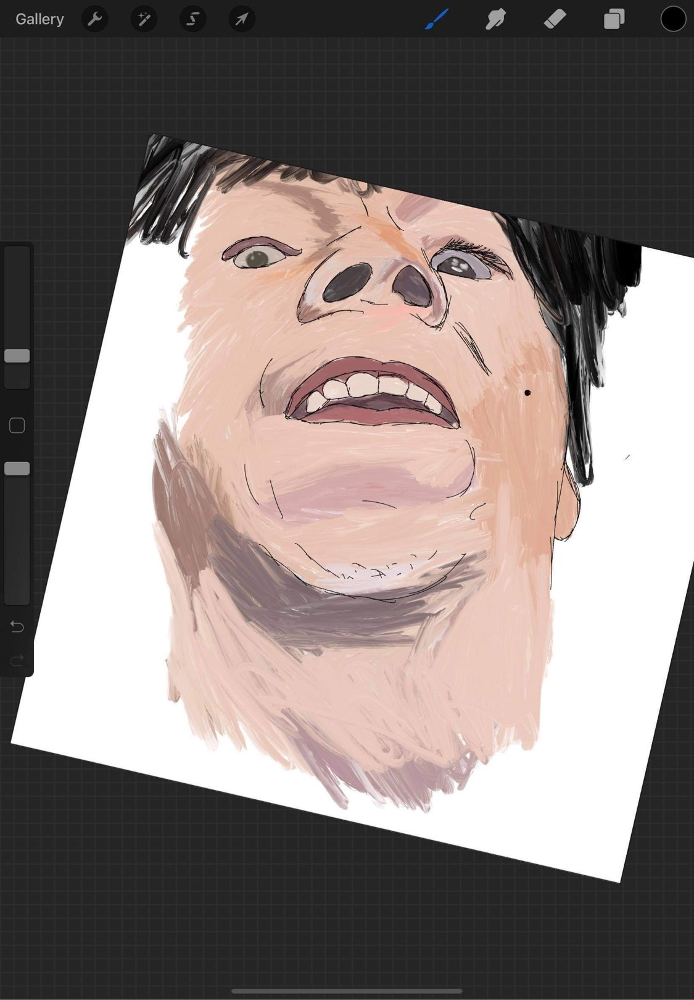
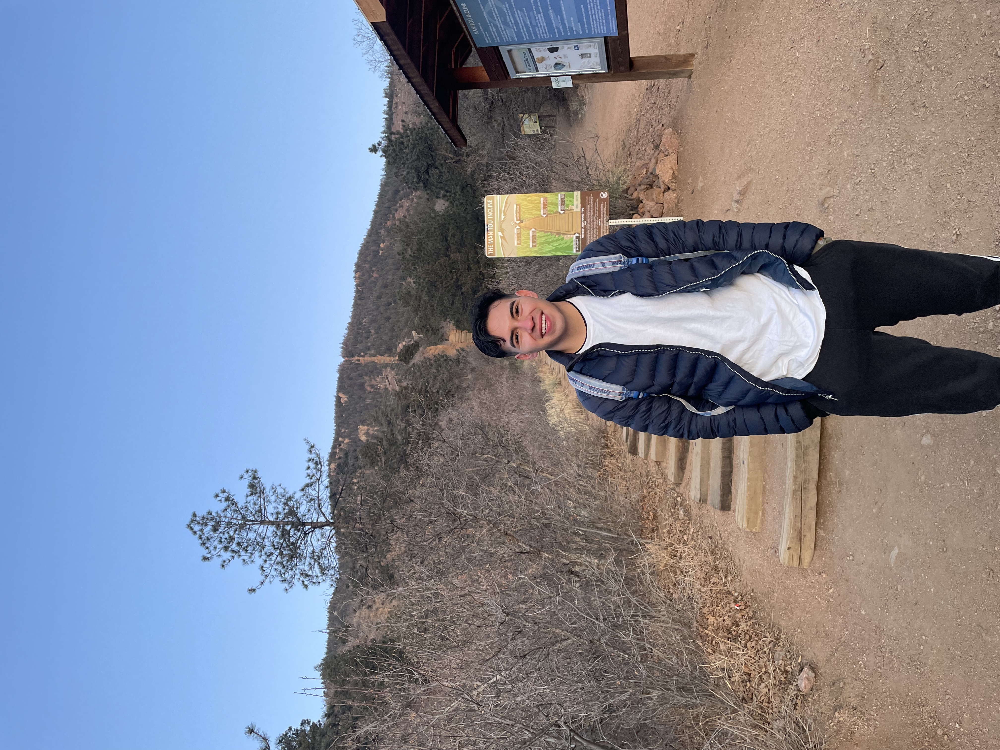
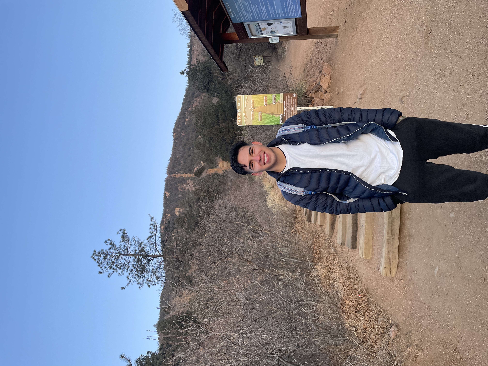

Drawing & Painting Current
Drawing and painting are activities I love to do in my free time. This allows me to keep my creative mind working while learning new skills. It has improved my patience and overall enjoy looking back at what I created.



 
